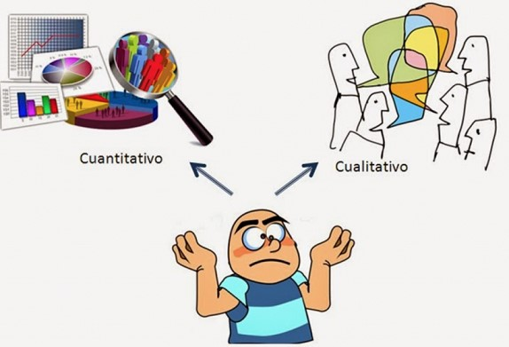

1.1.2 La naturaleza de los métodos cuantitativos y cualitativos.
Los problemas de negocios están relacionados con la aplicación de los modelos cualitativos y posteriormente dan pauta para la aplicación de los modelos cuantitativos. Ambos comparten términos similares que los relacionan entre sí: se valen de la observación y evaluación de fenómenos; establecen suposiciones o ideas mediante pruebas y demuestran que tengan fundamento a través del análisis, etc.
Aunque ambos enfoques comparten esas etapas generales, cada uno tiene sus propias características.
Enfoque cuantitativo, contesta preguntas de investigación y prueba hipótesis establecidas previamente mediante la recolección y el análisis de datos, apoyándose en la medición numérica y en la estadística para conocer los patrones de comportamiento en una población.
Enfoque cualitativo, se basa en métodos de recolección de datos sin cuantificación numérica, como las descripciones y las observaciones. Su propósito consiste en reconstruir la realidad, tal y como la observan los actores de un sistema social previamente definido.
Ambos enfoques constituyen diferentes aproximaciones al estudio de un fenómeno y han realizado notables aportaciones al avance del conocimiento, son complementarios; es decir, cada uno tiene su función específica para conocer un fenómeno, y buscar una solución a los problemas y cuestionamientos [2].

Extraído de: http://normasapa.net/cuantitativo-o-cualitativo-cual-escoger/